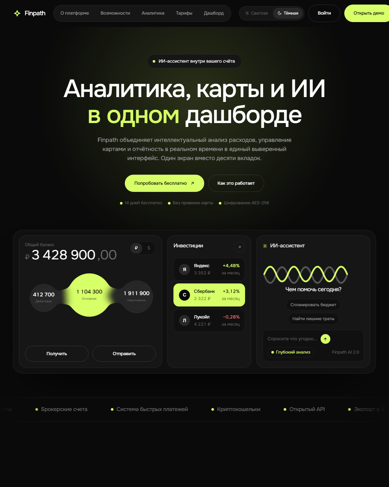
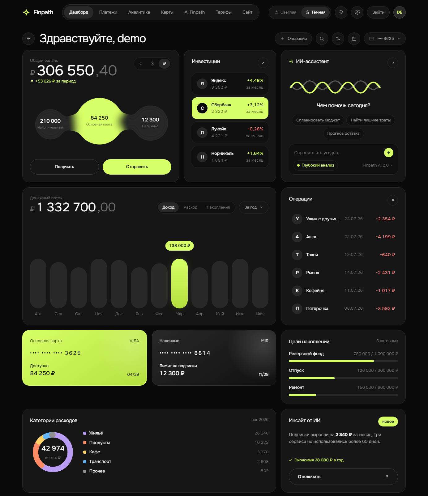

Кейс · веб-приложение
Finpath — дашборд личных финансов
Приложение, где деньги не просто показаны, а посчитаны: счета, операции и аналитика приходят из базы, а не из вёрстки. Можно зайти демо-аккаунтом и покрутить настоящий интерфейс с годом операций.
- 12месяцев операций в демо-аккаунте
- 0зависимостей на фронтенде — ни сборки, ни фреймворка
- 306 550,40 ₽баланс сходится с суммой трёх счетов до копейки
- 4решения в модели данных, без которых цифры разъезжаются
Задача
Сделать не «страницу про финансы», а рабочий инструмент: пользователь заводит счета, вносит операции и видит, куда уходят деньги. Дизайн при этом должен остаться на уровне продуктового, а не админки.
Отдельное условие — фронтенд без сборки и зависимостей. Такой проект открывается мгновенно, живёт на любом хостинге и не ломается через год из-за обновления фреймворка.

Четыре решения в модели данных
Приложение про деньги ломается не в интерфейсе, а в том, как деньги хранятся. Четыре вещи, заложенные сразу, потому что переделывать их позже — это миграция с простоем:
1. Суммы хранятся Decimal, а не Float
Двоичная плавающая точка не представляет 0.1 точно. На коротком
списке этого не видно, а на длинной ленте операций остаток начинает
расходиться с суммой строк в копейках — и сходится только после
ручной сверки. Для денег это неприемлемо, поэтому в базе
Decimal(14,2), а наружу отдаётся обычное число.
2. Сумма всегда положительная, направление задаёт тип
Соблазн хранить расход минусом велик, но тогда знак в сумме и отдельное поле типа — это два источника правды, которые рано или поздно разойдутся: расход с плюсом попадёт в доходы и тихо испортит всю аналитику. Поэтому сумма — модуль, а знак вычисляется из типа в одном месте.
3. Дата операции отдельно от даты внесения
occurredAt — когда деньги ушли, createdAt —
когда запись внесли. Для операции задним числом это разные дни, и
все отчёты строятся по первой. Спутать их — значит получить отчёт,
где вчерашняя покупка попала в сегодняшний месяц.
4. Удаление категории не уносит операции
Деньги были потрачены, даже если рубрику потом упразднили. Поэтому при удалении категории связь обнуляется, а операция остаётся — иначе чистка справочника молча стирала бы часть истории расходов.
Что видно на экране
Сводка сходится сама с собой, и это первое, что стоит проверять в финансовом приложении:
| Показатель за год | ₽ |
|---|---|
| Доход | 1 332 700,00 |
| Расход | 632 031,47 |
| Накопления | 700 668,53 |
1 332 700 − 632 031,47 даёт ровно 700 668,53. Сходимость не подрисована: все три числа считает база отдельными запросами, и расхождение сразу показало бы ошибку в модели.

Гостевой режим — это сама вёрстка
Без входа дашборд показывает демонстрационные данные, и они лежат прямо в разметке. Второй их экземпляр в скрипте неизбежно разошёлся бы с первым, а ссылка «Открыть демо» с лендинга не должна упираться ни в пустой экран, ни в форму входа. После входа те же блоки заполняются из API.
Что вскрылось при первом живом запуске
Пока приложение работало на выдуманных данных, всё выглядело прилично. Настоящая база показала два изъяна, которых не видно ни на типах, ни на сборке:
- годовой график строился по трём засеянным месяцам — девять столбцов из двенадцати стояли нулями. Считал верно, а выглядел сломанным;
- после заполнения года доход из двух ровных слагаемых дал почти прямую линию: разброс 6 %. Нерегулярная подработка исправила картину — стало 96 000 … 138 000, и график наконец показывает то, ради чего его смотрят.
Заодно нашлась ошибка доступности: переключатель «Доход / Расход /
Накопления» менял только цвет кнопки, без aria-pressed.
Скринридер объявлял все три вкладки одинаково — выбранную было не
отличить.
Как развёрнуто
Страницы отдаются с GitHub Pages, бэкенд — отдельным сервисом. Разделение вынужденное: сборщик хостинга кладёт в функцию только то, что прослеживается из кода, и статику внутрь неё не уместить. Побочный плюс — страницы грузятся с ближайшей точки и не будят сервер.
Стек
Пароли хранятся хешами bcrypt, вход по JWT, чужие данные недоступны: каждый запрос ограничен владельцем.
Работа учебная, не по заказу клиента. Интерфейс — реализация чужого дизайн-концепта: Finpath, автор макета Kateryna Sharova. Вёрстка, бэкенд и модель данных — мои.
Нужен сервис с личным кабинетом?
Регистрация, вход, свои данные у каждого пользователя, расчёты и отчёты — это ровно та задача, которую решает Finpath. Опишите, что нужно считать и кому показывать, — скажу срок и цену. Разбор бесплатный.
Демо-вход: demo@finpath.app / demo12345